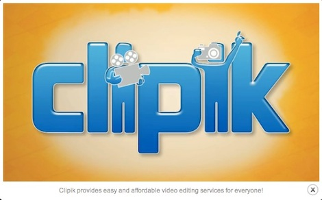

Picture a funnel. This is the entirely apropos image that Clipik co-founder Adriano Blanaru employs to describe the lifespan of digital video content. At one end (the wide one), you have creation–this is the easy part… almost too easy. A simple handheld 720pi HD flip cam, for example, can record around 1.3 megabytes of video per second, which adds up to multiple gigabytes after hours of footage. But at the other end (the small one), is utilization. So little of this content gets watched, let alone edited.
{kind=link}
“People are recording more and more video every day,” explains Adriano, “but it is way more complicated [than pictures] to deal with once they’re imported. Video editing is hard and time consuming. People don’t do it.” Enter Clipik, a flourishing NYC-based startup company co-founded by Adriano and his business school buddy Pablo Lema. Clipik provides amateur videographers (i.e., anyone with a camera) with access to a trove of talented video editors who will take your loads of content and mold it into concise and engaging films to be preserved and shared.
What Clipik Offers That Traditional Video Editors Don’t
Clipik may not sound like a particularly novel idea. Sure, there are plenty of video editors out there more than willing to take your wedding footage and stick in some fancy captions, sweet fades, and video stills that appear to the smooth sounds of Kenny G. But Clipik offers something different. The company was founded on the belief that every should have access to a service that takes all that content and pares it down to its precious core, the memories. Professional editors can charge exorbitant hourly rates, that just aren’t affordable (especially in this belt-tightening economy). To take on the project oneself requires training, software, time, and an artistic sensibility–all things which many people lack. Adriano and Pablo brainstormed for months and emerged with a business model that ensures quality content at an affordable rate.
Clipik’s business model lies somewhere between a marketplace and crowd sourcing. Freelance video editors apply to work on projects for Clipik. Their qualifications and sample videos are reviewed by the team and, when approved, they become eligible to take on projects from the Clipik job board. Unlike similarly modeled sites, the freelancers don’t bid on jobs–founders feared that would kill quality. Instead, editors get a cut of the fixed price charged to the client. The three price packages include a $49 short video (submit up to 8 mins of raw video, 40 photos, and one song), a $99 medium video (submit up to 20 mins of raw video, 100 photos, and two songs), and a $199 “epic” video (submit up to 30 mins of raw video, 150 photos, and three song). Clients post their job requirements to the Clipik site and the editors claim the projects that match their interests and availability. It’s a model that keeps everyone happy. “We get awesome feedback from both sides,” says Adriano. “The comments we get from customers are like short love letters.” Meanwhile, Clipik is being approached by talented video editors from all over the world. The company started acquiring editors through job sites and by spreading the word. Now, says Adriano, “the artists are just showing up. We’re not putting any effort into sourcing [them]!”
The Broad Applications of A Well-Crafted Video
So why squeeze your five hour wedding video into a short form presentation? Isn’t something lost in the process? Quite the contrary, insists Adriano: “It’s not even about being able to consume these memories. It’s about making sure you have something worth keeping.” Clipik editors whittle your content down to get at those core moments. “I wanted to see a five to seven minute video of your wedding, not the whole thing,” says Adriano, voicing an often unspoken sentiment. However, a Clipik video doesn’t just make your content more manageable, it also becomes infinitely more engaging. Adriano compares a photo album, for example, to a professional video edit. “A photo album is nice,” he says, “but if you give your grandmother a photo album of your baby’s first birthday, she’ll just flip through and say ‘oh that’s nice.’ If you give your grandmother one of these videos, she’ll cry.” Not that Clipik is trying to make your grandma cry…the point is that a crafted video will engage viewers on a more emotional level, enhancing the experience of remembering.
Don’t assume, however, that Clipik is only useful for weddings, honeymoons, birthdays, babies, and all that sentimental stuff. Maybe you want an awesome video for your corporate presentation. Maybe you have just backpacked Europe and want a live action scrapbook of your journey. Maybe you’re a high school sports star and you want a reel of your best moments to hand off to talent scouts. “If you think about, there are no limits for what the applications for video are,” Adriano posits.
What’s Next for Clipik?
The future certainly looks bright for Clipik, its artists, and its users alike and Adriano has a clear vision as to how the company might expand its services. “The biggest thing for the future is moving backwards through the process,” was his seemingly idiosyncratic response. To understand what he means we have to return to the image of the funnel: Shooting -> Managing -> Post Production (big end to little). So far Clipik has been focusing on post-production, a stage that few people reach only after they have rummaged through the loads of content that they have so effortlessly produced. Clipik wants to make this phase of the process easier in order to “widen the funnel,” so to speak. Just sitting down to look through the footage can be a problem for most people, says Adriano. “I want to be able to help people and come up with creative solutions and make the whole work flow easier and as seamless as possible.” For Clipik, “moving backwards in the chain” means improving infrastructure and updating the user interface to optimize the entire process.
Conclusion
Clipik is on a mission to revolutionize the way we deal with digital content. The most poignant message that the company projects is this idea of “creating something that is worth keeping.” Not all content is created equal. Our generation, more than any other in the past, has been forced to wade through rivers of information, to pick and choose, splice and graft, to cull until we come up with something “worth” digesting. Clipik is taking over that process when it comes to video. They are the experts that will mine your content quarries, discover those gems worth keeping, and polish them to perfection. And it’s no easy task. “Video is such a hard problem and no one has been able to solve it yet. Not even us,” admits Adriano. However, Clipik seems poised to conquer this rather ponderous problem. So save your moans and groans, because modern home videos are going to put those long-ass home movies of the past to shame.